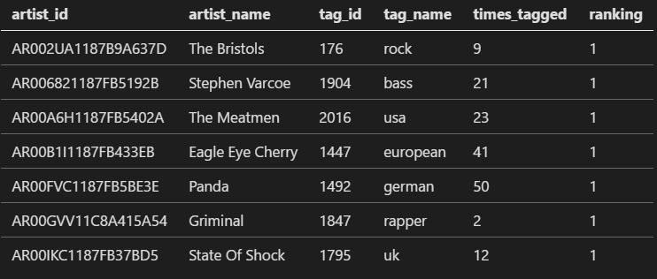

The Challenge
Using a large real life data set, how does using SQL Server compare to Hadoop?
Source Data
The Million Song Dataset, a 280GB (compressed) set of data.
Contains detailed records of the top popular songs across the world.
The data is freely available & frequently used in education.
Could this data set be considered "big data"?
The "4Vs" of Big Data
-
Volume
- An amount of data so large it is difficult to process quickly
-
Velocity
- The speed at which the data is generated makes it difficult to process fast enough to keep up
-
Variety
- The data isn't just a singular agreed form but comes in lots of different, often incompatible formats
-
Veracity
- The quality of the data varies greatly
Do the "4Vs" Apply?
-
Volume - Yes
- 280GB compressed
- The data is sufficiently large that it is difficult to process
-
Velocity - No
- Static data set, the data doesn't change
- The speed we can process it isn't a factor
-
Variety - No
- The data comes in a single format (HDF5)
-
Veracity - Yes
- The data is well structured, but not particularly clean
- Lots of holes, spelling mistakes, malformed info etc
Approaches
Luke will be demonstrating an ETL process with SQL Server
Tim will be showing off how to query the data in Hadoop
Mutual Goal
Tim and I have agreed to use our approaches to answer the following questions:
- Q1. For each artist, what is the most commonly tagged genre?
- Q2. What is the average tempo across all the songs in the dataset?
- Q3. Who are the top 10 artists for fast songs (based on tempo)?
- Q4. What are top ten songs based on their hotness in each genre?
Curveball
After we have finished our queries, we will be asking a curveball question to test the validity of each approach with changing requirements.
Constraints
Our company is footing the bill for each approach.
So the cost needs to be small enough that neither of us get fired.
The SQL Server Approach
Who needs distributing processing eh?
Accessing the Data
AWS provides the Million Song Dataset for us as a 500GB snapshot.
This can be attached for a Linux/Unix machine running in EC2
I used a t2.medium size box (2 cores, 4GB RAM) running Ubuntu to access the data.
Unfortunately the snapshot is only available in the US-East-1 datacenter (North Virginia), hence having to use something in the US
Reading the Files
The data comes in the form of "HDF5" files
This format is designed for high volume data.
Not exactly supported by Microsoft's SQL Server tools.
They do however provide a Python script for querying HDF5 files
Model Being Used
Based on the questions we are answering from the set, I removed all unnecessary columns from our set.
The model that will be output to CSV is:
1:
2:
3:
4:
5:
6:
7:
8:
9:
10:
11:
|
class Song(BaseSong):
attributes = [
"artist_id", # Unique artist id in set
"artist_name", # Artist name
"release", # Album name
"title", # Track name
"artist_mbtags", # Genres & other metadata
"tempo", # For average tempo
"song_hotttnesss", # I don't know what hotness is, but I wanna
"year" # The year of release
]
|
Converting to CSV
1:
2:
3:
4:
5:
6:
7:
8:
9:
10:
11:
12:
13:
14:
15:
16:
17:
18:
|
i = 0
songs = []
flush_at = 2000
for root, _, _ in os.walk(data_root):
for file in os.listdir(root):
file_path = os.path.join(root, file)
if os.path.isdir(file_path):
pass
if file_path.endswith(".h5"):
songs.extend(load_file(file_path))
i = i+1
if i % flush_at == 0:
output_to_csv(output_dir, i, songs)
clear_list(songs)
if len(songs) > 0:
output_to_csv(output_dir, i, songs)
|
Uploading to S3
Using the AWS Cli this is a doddle:
1:
2:
3:
4:
5:
|
pip install awscli
aws configure
aws s3 sync /data/output s3://big-data-bristol/million-songs-csv
|
Loading into SQL Server
Loaded the data in it's raw format into a SQL Server staging table:
1:
2:
3:
4:
5:
6:
7:
8:
9:
|
with SqlServerConnection(settings.connection_string) as database:
for file_name in os.listdir(script_folder):
with open(os.path.join(script_folder, file_name)) as csvfile:
reader = csv.reader(csvfile)
next(reader) # Skip header
tracks = []
for row in reader:
tracks.append(Track(*row))
database.store_rows(tracks)
|
Once it's in the database it's easier for us to manipulate.
Cleansing the Data
Now the data is in SQL, we can start to cleanse it ready for querying.
Our target table structure is as follows:
Importing the Tracks
We'll import the tracks first, without the tags:
1:
2:
3:
4:
5:
6:
7:
|
INSERT INTO [dbo].[Track] (
[artist_id],[artist_name],[release],[title],
[tempo],[song_hotttnesss],[year]
)
SELECT [artist_id],[artist_name],[release],[title],
[tempo],[song_hotttnesss],[year]
FROM dbo.Staging_Track
|
Parsing the Tags
We'll then parse the tags array into individual rows:
1:
2:
3:
4:
5:
6:
7:
8:
9:
10:
11:
12:
13:
14:
|
-- Takes data in the form `['rock' 'pop' 'blues']`
-- and parses it into a row per tag
INSERT INTO dbo.Tag ([name])
SELECT T.Tag
FROM (
SELECT DISTINCT tag.Value AS [Tag]
FROM dbo.Staging_Track
CROSS APPLY STRING_SPLIT ([artist_mbtags], '''') tag
) T
WHERE LTRIM(T.Tag) NOT IN (
'[]', '[', ']', ''
)
-- Remove encoded whitespace
AND ASCII(T.Tag) != 10
|
Associating Tags to the Tracks
Finally we'll associate the tags with their original tracks:
1:
2:
3:
4:
5:
6:
7:
8:
9:
10:
11:
|
-- Associate the tags with the tracks we pulled them from
INSERT INTO dbo.Track_Tag (TrackId, TagId)
SELECT DISTINCT T.Id, Tag.Id
FROM dbo.Staging_Track ST
JOIN dbo.Track T ON
ST.artist_id = T.artist_id AND
ST.release = T.release AND
ST.title = T.title
-- Messy however it allows us to keep things set based
-- This does however mean the query takes a substantial time to run
JOIN dbo.Tag Tag ON ST.artist_mbtags LIKE '%''' + Tag.[name] + '''%'
|
(Side note: this is a terrible way of doing it!)
Querying the Data
OK, now the data is loaded, we can start answering the original questions posed
For each artist, what is the most commonly tagged genre?
1:
2:
3:
4:
5:
6:
7:
8:
9:
10:
11:
12:
13:
14:
15:
16:
17:
18:
|
SELECT *
FROM (
SELECT *, [ranking] = ROW_NUMBER() OVER(
PARTITION BY artist_id
ORDER BY times_tagged DESC)
FROM (
SELECT [artist_id] = T.artist_id,
[artist_name] = MIN(T.artist_name),
[tag_id] = TG.Id,
[tag_name] = TG.[name],
[times_tagged] = COUNT(*)
FROM dbo.Track T
JOIN dbo.Track_Tag TT ON TT.TrackId = T.Id
JOIN dbo.Tag TG ON TG.Id = TT.TagId
GROUP BY T.artist_id, TG.Id, TG.[name]
) tags_by_artist
) tags_by_artist
WHERE ranking = 1
|
For each artist, what is the most commonly tagged genre?

(Sample of results)
What is the average tempo across all the songs in the dataset?
1:
2:
|
SELECT [average_tempo] = AVG(tempo)
FROM dbo.Track
|
Who are the top ten artists for fast songs (based on their tempo)?
1:
2:
3:
4:
5:
6:
7:
|
SELECT TOP(10)
[artist_id] = T.artist_id,
[artist_name] = MIN(T.artist_name),
[average_tempo] = AVG(T.tempo)
FROM dbo.Track T
GROUP BY T.artist_id
ORDER BY AVG(T.tempo) DESC
|
Who are the top ten artists for fast songs (based on their tempo)?
What are top ten songs based on their hotness in each genre?
1:
2:
3:
4:
5:
6:
7:
8:
9:
10:
11:
12:
13:
14:
15:
|
SELECT *
FROM (
SELECT TG.Id,
TG.[name],
T.artist_name,
T.title,
T.song_hotttnesss,
[ranking] = ROW_NUMBER() OVER(
PARTITION BY TG.Id
ORDER BY song_hotttnesss DESC)
FROM dbo.Track T
JOIN dbo.Track_Tag TT ON TT.TrackId = T.Id
JOIN dbo.Tag TG ON TG.Id = TT.TagId
) hottest_tracks_by_tag
WHERE ranking < 11
|
What are top ten songs based on their hotness in each genre?
What are top ten songs based on their hotness in each genre?
What are top ten songs based on their hotness in each genre?
Overall Timings
- 00:10 - Setup AWS EC2 instance
- 10:00 - Export HDF5 data to CSVs
- 00:10 - Upload CSVs to S3
- 00:15 - Setup Azure SQL Database Instance
- 00:10 - Download CSVs for import into SQL
- 02:00 - Import the raw data into the database
- 04:52 - Cleanse data for querying
- 00:05 - Run queries to answer the questions proposed
Total time taken: 17 Hours 42 Minutes
Total Cost
Estimates based on time the infrastructure was live:
EBS Volumes |
£25.00 |
EC2 Instance |
£2.00 |
S3 Storage |
£0.02 |
SQL Database |
£14.00 |
Total |
£41.02 |
Curveball
Which countries have the most punk artists by year across the set?
As I needed to cut down the data to just the columns we're interested in, we'd have to rerun the whole approach to gather the location details.
Would need to use geospatial queries in SQL Server, which would increase the time required to load the data.